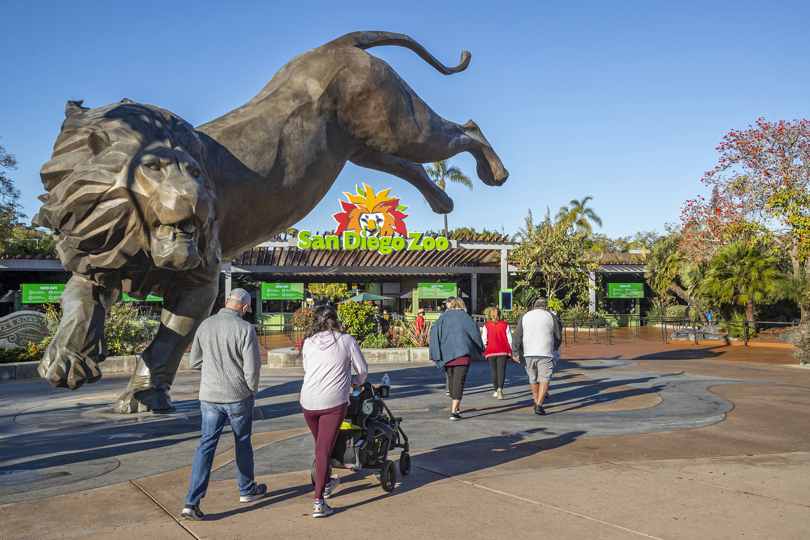

What This Guide Covers
See wildlife
Meet animals from around the world and discover the different habitats at each zoo
Learn about conservation
Find out how zoos help protect different species
Food at the zoo
Plan a meal break by learning about each zoo’s dining options
Explore the three zoos
Start your trip at the San Diego Zoo, where you can see koalas, penguins, and condors.
San Diego Zoo

Visitors can go to the Outback’s elevated walkways, where koalas rest among eucalyptus trees, or Africa Rocks, where there are African penguins, lemurs, and leopards. They can also learn about how the San Diego Zoo Wildlife Alliance works to conserve species like the California condor. When they get hungry, Albert’s Restaurant offers seated dining beside a waterfall, while Busy Bee Café serves casual options such as burgers and pizza.

Smithsonian National Zoo
See giant pandas along Asia Trail, and learn how Smithsonian scientists work to protect them and their habitats. For a meal, visit Mane Grill or a food truck.

Bronx Zoo
Visit gorillas and okapis in Congo Gorilla Forest, an exhibit connected to conservation work in the field. Stop at Dancing Crane Café for a meal, or check which seasonal food stands are open.